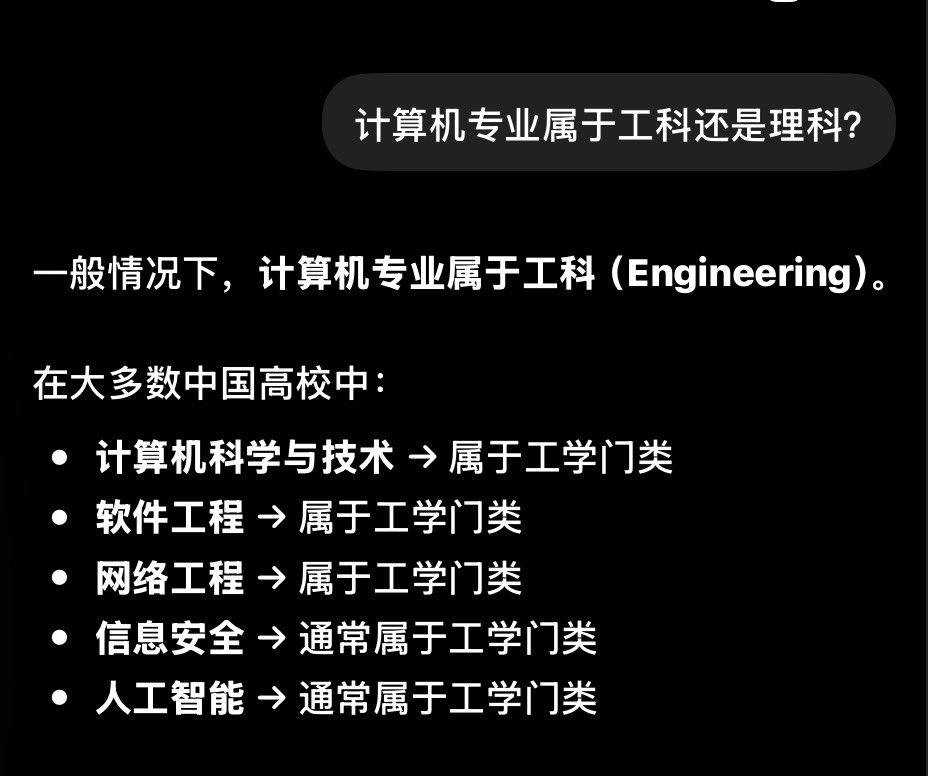

みかんミックス🍥
@mikanmkx
@CyberKanjousen 我一直觉得能看明白ai对代码的解释是vibe coding的底线，甚至都不要求直接看懂代码，不然最后出来的只能是屎山

サイバー環状線
@CyberKanjousen
「文科生 Vibe Coding 比理科生更有优势！」
这种话能说出来就已经证明其智商不足環状線的一半了。
因为计算机专业属于工科，而非理科。
退一万步讲，就算「文科生 Vibe Coding 比工科生更有优势」也是不正确的。文科生真的比工科生更擅长写提示词吗？文科生对专业词汇的理解比工科生更强吗？
文科 https://t.co/V2p50GHZsd